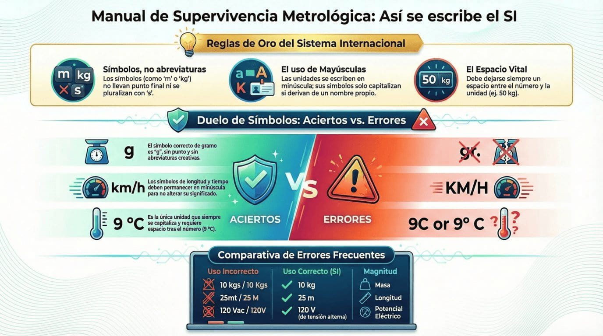

A estas alturas del tema, ya te habrás dado cuenta de que en el Sistema Internacional de Unidades no se deja nada al azar, hasta tal punto que todo debe escribirse tal y como está establecido, sin ninguna modificación.
En ocasiones, cuando resolvemos un problema estamos acostumbrados a dar las unidades de distintas formas. Por ejemplo, mts al referirnos a metros, o usar Kg para hablar de kilogramos. Pues bien, tanto una forma como la otra no estarían admitidas por el Sistema Internacional de Unidades.
Los símbolos de las unidades son entidades matemáticas y no abreviaturas. Por tanto, no van seguidos de un punto, salvo al final de una frase, ni se usa el plural, ni se pueden mezclar símbolos de unidades con nombres de unidades en una misma expresión, pues los nombres no son entidades matemáticas.

Reglas de uso.
En la siguiente presentación puedes ver las reglas referidas al uso de los símbolos de las unidades.
Busca los errores.
En el siguiente texto hay varios errores relacionados con las normas ortográficas del SI. Detéctalos y corrígelos.
Hoy que las técnicas envejecen con celeridad, resulta paradójico que las medidas de la masa dependan de un artefacto de 117 años de antigüedad guardado en las cámaras acorazadas de la Oficina Internacional de Pesas y Medidas. Según el sistema internacional de unidades (SI), el KG es igual a la masa de este prototipo internacional de Kg, un cilindro de una aleación de platino e iridio, fabricado con gran precisión, de 39 mili-metros de altura e igual diámetro. El SI está administrado por la Conferencia Internacional de Pesas y Medidas. En los últimos decenios, la Conferencia ha redefinido otras unidades fundamentales del SI para mejorar su precisión y mantenerlas acordes con el adelanto del conocimiento científico y técnico. Los patrones de m. y sg. se basan ahora en fenómenos naturales. Hoy en día, el kilogramo es la última unidad del SI que continúa dependiendo de un objeto manufacturado y único. Por eso, los metrólogos se proponen definir la masa mediante técnicas que dependan solo de las características inmutables de la naturaleza.
<br>
Una comisión Comité Internacional de Pesas y Medidas (CIPM) propuso revisar las definiciones formales de las unidades básicas del SI por la 26ª CGPM, en 2018. Los cambios propuestos fueron:
"Seguirá habiendo las mismas siete unidades básicas (metro, segundo, kilogramo, amperio, kelvin, mol y candela). De éstos, el kilogramo, el amperio, el kelvin y el mol se redefinirán de acuerdo al cálculo de los valores numéricos exactos de la constante de Planck, de la carga eléctrica elemental, de la constante de Boltzmann y de la constante de Avogadro, respectivamente. El segundo, el metro y la candela ya están definidas por constantes físicas y sólo es necesario reeditar sus definiciones actuales. Las nuevas definiciones mejorarán el SI sin cambiar el tamaño de las unidades, asegurando así la continuidad con las mediciones actuales."
Como ves las definiciones no tienden a simplificarse desde un punto de vista coloquial.
Para saber más. Algo de legislación.
Te recomendamos que para poner colofón final a este apartado, eches una ojeada al siguiente pdf. En él encontrarás el Real Decreto 2032/2009, de 30 de diciembre, por el que se establecen las unidades legales de medida. Descubrirás que es algo más extenso que lo que has estudiado, pero que toda la información de este apartado está contenida en él.
Por cierto, un Real Decreto se sitúa en el orden de prelación de las normas jurídicas inmediatamente después de las normas con rango de Ley y antes de la Orden Ministerial.
En base a esto, dos reflexiones:
1) Quizás que haya un Real Decreto que legisle las medidas que tenemos que utilizar y cómo debemos expresarlas, te haga entender la importancia de este apartado.
2) Que con una formación adecuada podemos llegar a manejar textos legislativos como este.